My girlfriend Emily died on August 7th of 2012.
I just received another message, and it's worse than the others. She was involved in a three car crash driving home from work when someone ran a red light. She was dead within minutes at the scene.
We had been dating for five years at that point. She wasn't big on the idea of marriage (it felt archaic, she said, gave her a weird vibe), but if she had been, I would've married her within three months of our relationship. She was vibrant; the kind of girl that would choose dare every time. She was always happy when camping, but a total technophile too. She always smelled like cinnamon.
That being said, she wasn't perfect. She always said something along the lines of, "If I kark it first, don't just say good things about me. I've never liked that. If you don't pay me out, you're doing me a disservice. I've got so many flaws, and that's just another part of me." So, this is for Em: the music she said she liked and the music she actually liked were very different. Her idea of affection was a side hug. She had really long toes, like a chimpanzee.
I know, that's tangential, but I don't feel right without you having an idea of what she was like. Em had been dead for approaching 13 months when she first messaged me.
September 4, 2013
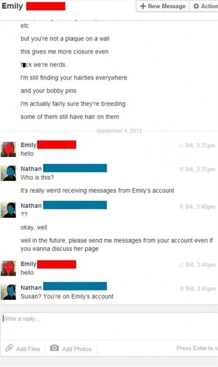This is when it began. I had left Emily's Facebook account activated so I could send her the occasional message, post on her wall, go through her pictures. It felt too final (and too un-Emily) to memorialize it. I 'share' access with her mother (Susan) - meaning, her mother has her login and password and has spent a total of three minutes on the account (or total on a computer). After a little confusion, I thought it was her.
November 6, 2013
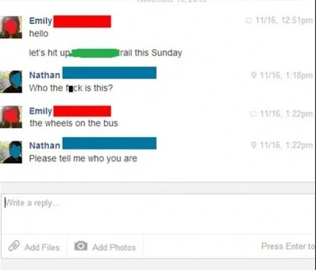I had received conformation from Susan that she hadn't been on Em's profile since the week of her death. Em knew a lot of people, so I thought it was one of her tech savvy friends fucking with me in the worst possible way.
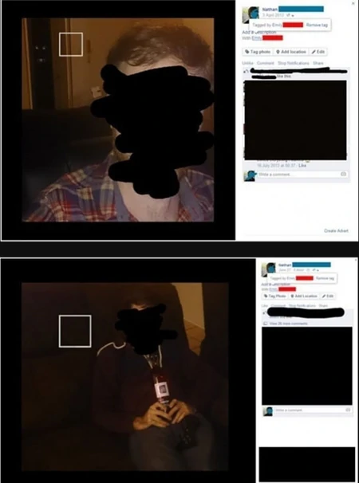Around February 2014, Emily started tagging herself in my photos. I would get notifications for them, but they'd normally be removed by the time I got to the picture. The first time I actually caught one, it felt like someone had punched me in the gut. 'She' would tag herself in spaces where it was plausible for her to be, or where she'd usually hang out. I've got screenshots of two (from April and June; these are the only ones I've been able to catch, so they're a little out of the timeline I'm trying to write out.)
Around this time, I began to lose sleep. I was too angry to sleep.
She would tag herself in random photos every couple of weeks. The friends who noticed it thought it was some fucked up bug; I found out recently that there have been friends who have noticed and didn't say anything about it. Some of them even removed me from their Facebook friends list.
At this point, you may be wondering 'Why didn't you just kill your Facebook profile?' I almost wish I did. I did for a little while. On days when I can't get out there, it's nice to have friends to chat with. It's nice visiting Em's page when the little green dot isn't next to her name. I was already socially reclusive when Em was alive; her death turned me into something pretty close to a hermit, and Facebook and MMOs were (are) my only real social outlets.
March 15, 2014
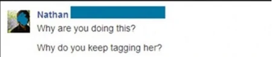I sent what I assumed was Em's hacker a message.
On March 25th, I got an 'answer'.
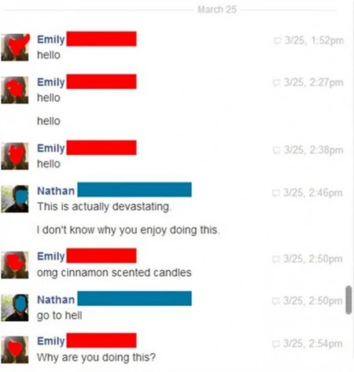It wasn't until a few months after going through these chats that I discovered that she was recycling my own words as well.
My response seems kinda lackluster here. I was intentionally providing her/him with emotional 'bait' ('This is actually devastating') to keep them interested in their game; I was working off the assumption that the kind of person who would do this is the kind of person that thrives of off the distress of others. I was posting in tech forums, trying to find a way to find this person, contacting Facebook. I needed to keep them around to gather 'evidence'.
I had even changed the password and security details several times.
April 16, 2014
I received this:
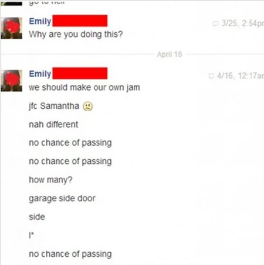April 29, 2014
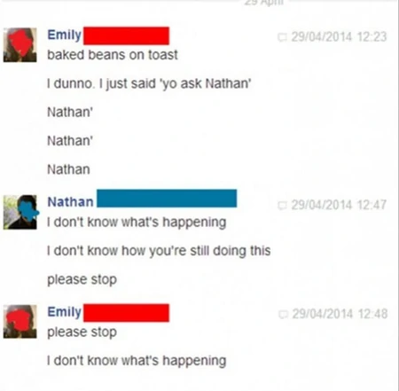I hadn't discovered any leads. Facebook had told me the locations her page had been accessed from, but since her death, they're all places I can account for (my house, my work, her mum's house, ect.).
My response here wasn't bait. "yo ask Nathan" was an inside joke that's too lame worth explaining, but seeing 'her' say it again was absolutely fucking crippling. My reaction in real life was much less prettier.
Her last few messages have started to scare me, but I wouldn't admit until this point.
May 8, 2014
I don't even have words for this...
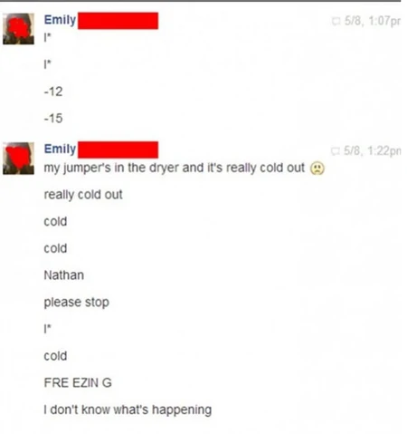'FRE EZIN G' is the first original word she's(?) said. This has given me nightmares that just won't end. I keep dreaming that she's in an ice cold car, frozen, blue and grey. I'm standing outside the car door in the warmth screaming for her to come out. She doesn't even realize I'm there. Sometimes her legs are outside with me.
May 24, 2014
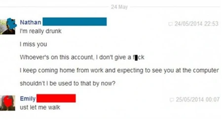I wasn't really drunk. Em wasn't an affectionate girl, and it always embarrassed her to exchange 'I love you's, cuddle, talk about how much we meant to each other. She was more comfortable with it when I was drunk. I pretended to be drunk a LOT.
Her reply is what prompted me to finally memorialize her page, thinking it might put an end to this. It might seem innocuous to her previous message - it's from an old conversation where I was trying to convince her to let me drive her home from a friend's house.
In the collision, the dashboard crushed her. She was severed in a diagonal line from her right hip to midway down her left thigh. One of her legs was found tucked under the backseat.
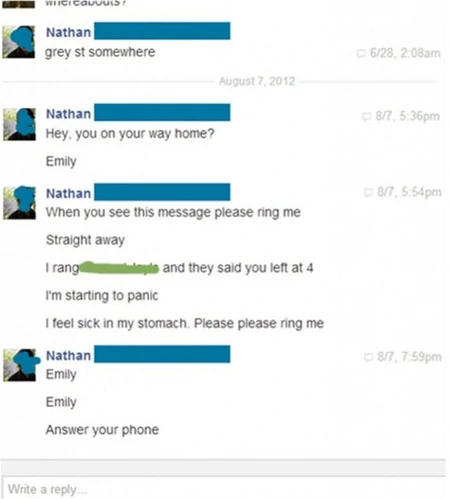August 7, 2012
Going back in time...
These are the messages I sent her the day she died. She was usually home by 4:30. This, alongside a couple voicemails, is the last time I talked to her under the assumption that she was still alive. You'll see why I'm showing you these soon.
July 1, 2014
I got these messages yesterday:
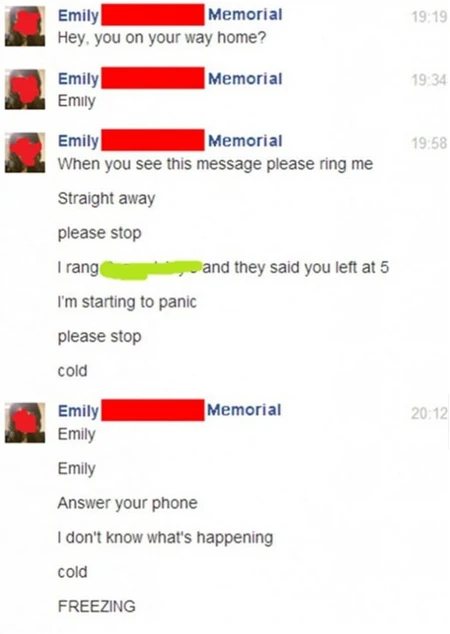I memorialized her page a few days after the message about walking. Until today, she'd been quiet; she hadn't even been tagging herself in my photos.
I don't know what to do anymore. Do I kill her profile? What if it is her? I feel like I wanna puke. I don't know what's happening.
I just got notification, I heard the alert sound. I'm just too afraid to swap windows and check it.
I checked the alert. I heard it as I was compiling all this together. This was the message..
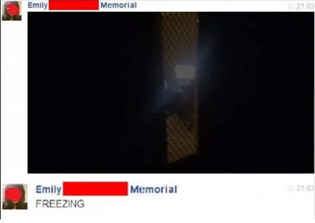That's my door...
That's my computer...
I got the message three hours ago, but I didn't want to check it until now...
Now I'm legitimately scared. I have no idea who took this photo.
I'm on my tablet in my garage. Zen for now. Going to drive to friend's. Forgot to open the garage door in my panic so building up the nerve to get out to do that now.